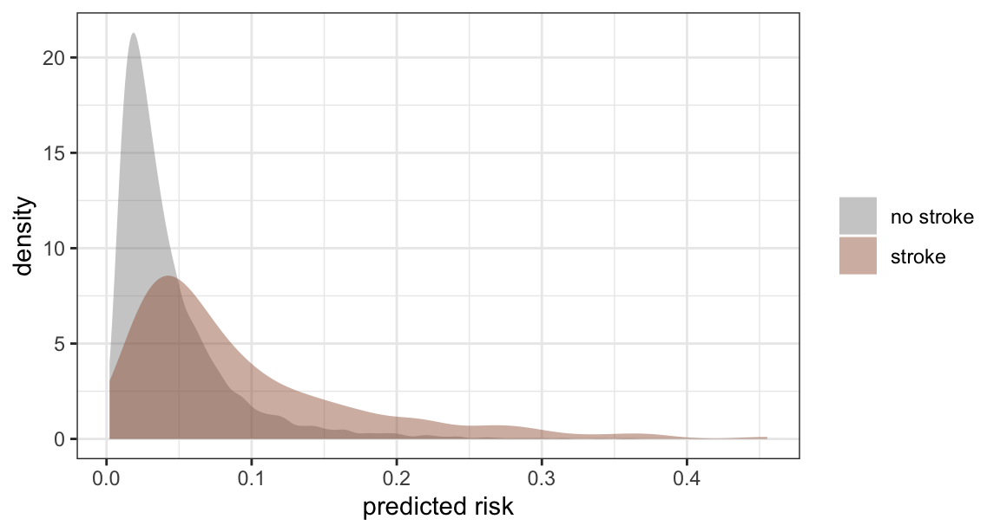
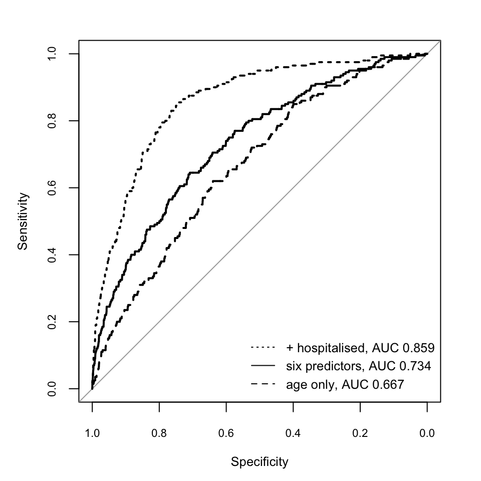
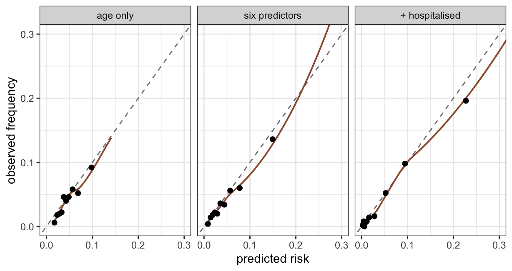
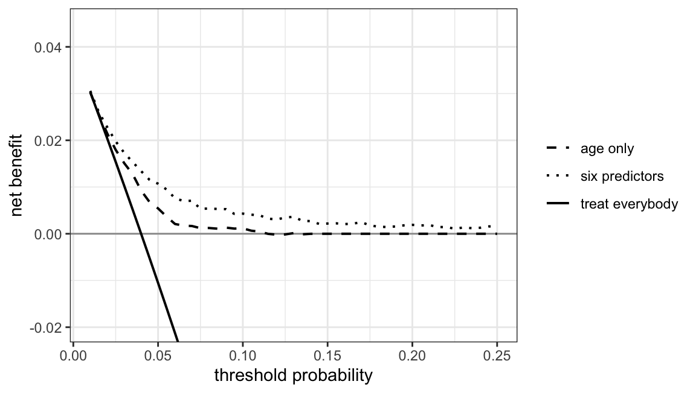
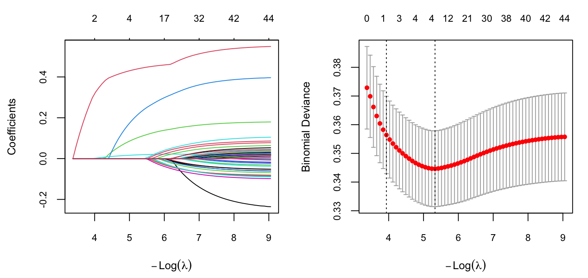

| Question | Causal estimation | Prediction |
|---|---|---|
| Target | contrast of potential-outcome risks | the risk conditional on V |
| Identified by | assumptions about the graph | nothing beyond transportability |
| Which variables may enter | the adjustment set, and only it | anything measured before prediction |
| Mediators | forbidden for a total effect | allowed and usually helpful |
| Colliders, common effects | forbidden | allowed and often strongly helpful |
| Consequences of the outcome | forbidden | allowed only if truly measurable in advance |
| Selection criterion | argument from subject knowledge | out-of-sample loss |
| What a coefficient means | an effect, for one predictor at most | nothing in particular |
| How it is validated | cannot be, from the data alone | held-out data, and external data |
| What failure looks like | a confident, wrong number | poor calibration in a new setting |
27 Acausal predictive regression — a different game
Every regression in Chapters 20 to 25 was fitted to answer a causal question, and every rule those chapters imposed — fix the adjustment set from the graph, never condition on a mediator, never condition on a common effect, report the estimate as a marginal contrast rather than a coefficient — followed from that purpose. This chapter fits regressions for a different purpose, and almost none of those rules survive the change.
The purpose is prediction: given what is recorded about a patient at some moment, state the probability that the patient will have a stroke. Nothing in that task requires knowing why. A model that predicts well may contain variables that cause the outcome, variables the outcome causes, variables that share a cause with it, and variables whose association with it is a quirk of how the data were collected. All of them carry information; none of their coefficients is an effect.
The chapter has three aims. The first is to make the two targets explicit, so that the criteria which follow from each can be separated. The second is to set out how predictive performance is measured, since this is the part of the machinery that causally-trained readers most often import incorrectly — and, in the other direction, the part that predictively-trained readers most often mistake for evidence about a causal claim. The third is to look at the variable-selection methods that dominate modern predictive practice, ridge and lasso regression.
27.1 Two targets
Write \(Y\) for the outcome, \(A\) for a treatment, and \(X\) for everything else recorded. The two targets are different functionals of different distributions.
The predictive target is the risk of the outcome conditional on what is known at the moment of prediction,
\[ P(Y = 1 \mid V = v), \]
where \(V\) is whatever subset of the recorded variables is available when the prediction must be made. This is a feature of the observed joint distribution. It requires no assumption beyond the one that the population being predicted for resembles the population the model was fitted to. It is estimable from data alone, and whether an estimate of it is good is settled by comparing predictions with outcomes in data the model has not seen.
The causal target is a contrast of potential outcomes under interventions — in the risk-ratio form used throughout this chapter, and in the notation of Chapter 10,
\[ \text{RR} \;=\; \frac{E[Y(1)]}{E[Y(0)]}, \]
where \(Y(a)\) is the outcome the patient would have under treatment \(A = a\), so that for a binary outcome \(E[Y(a)]\) is the risk if everyone were given \(a\). This is not a feature of the observed joint distribution at all. It becomes one only under assumptions — exchangeability given a stated adjustment set, positivity, consistency — that the data cannot verify. No amount of predictive accuracy supplies them, and no predictive check can detect their failure.
Two consequences follow immediately, and the rest of the chapter is a series of demonstrations of them.
First, the admissible variable set differs. For prediction, any variable measured before the prediction is issued may enter, whatever its causal role. For causal estimation, the set is fixed by the graph, and the graph forbids members that prediction welcomes.
Second, the criteria differ, and neither can be substituted for the other. Out-of-sample accuracy answers “will this model’s probabilities be right for the next patient” and is silent on identification. A correct adjustment set answers “is this contrast the effect” and is silent on accuracy. This has been stated repeatedly in the methodological literature and remains a common error in practice: a scoping review of 180 observational cohort studies published in January 2018 in the leading journals of six clinical fields found that 26% of them conflated the two, most often by selecting covariates for a causal question on predictive grounds, or by reading the coefficients of a prediction model as effects.1 2
27.2 A stroke predictor for the master cohort
The cohort is the one used since Chapter 20: 10,000 patients, a blood-pressure-lowering drug prescribed by indication, and stroke as the outcome. Chapter 20 onwards asked whether the drug prevents stroke. This section asks a different question: how well can a stroke be predicted at all, from what is recorded?
Because a predictive claim has to be checked against data the model has not seen, the cohort is split in half at random. Everything up to the evaluation is done on the training half alone.
d <- simulate_cohort() |>
mutate(age_c = (age - 62) / 10)
set.seed(11)
idx <- sample(nrow(d), nrow(d) / 2)
train <- d[idx, ]
test <- d[-idx, ]
c(train_n = nrow(train), train_strokes = sum(train$stroke),
test_n = nrow(test), test_strokes = sum(test$stroke)) train_n train_strokes test_n test_strokes
5000 230 5000 200 The outcome is uncommon: about 4.3% of the cohort has a stroke. This matters for everything that follows, and it is the ordinary situation in clinical prediction.
Three models are fitted, all logistic. The link is chosen here for a reason that did not apply in the causal chapters: a predictor’s output has to be a probability, and the log link this book uses for risk ratios does not confine its predictions to \([0, 1]\). Because every quantity reported in this chapter is either a predicted probability or a marginal contrast obtained by g-computation, nothing depends on reading a coefficient off the link scale.
pri <- prior(normal(0, 1.5), class = "b")
m_age <- brm(stroke ~ age_c, data = train, family = bernoulli(), prior = pri,
chains = 4, iter = 2000, seed = 1, refresh = 0,
file = "models/pred_age", file_refit = "on_change")
m_pred <- brm(stroke ~ drug + severity + age_c + diabetes + sbp + pref,
data = train, family = bernoulli(), prior = pri,
chains = 4, iter = 2000, seed = 1, refresh = 0,
file = "models/pred_full", file_refit = "on_change")
m_leak <- brm(stroke ~ drug + severity + age_c + diabetes + sbp + pref + hospitalised,
data = train, family = bernoulli(), prior = pri,
chains = 4, iter = 2000, seed = 1, refresh = 0,
file = "models/pred_leak", file_refit = "on_change")m_age uses age alone. m_pred uses everything recorded at or before treatment, with no causal reasoning whatever: the treatment, the confounder, age, diabetes, blood pressure and the prescriber’s preference all go in because all of them might carry information. m_leak adds hospitalised, which the simulation generates as a common effect of treatment and stroke. It is included deliberately, and its role is taken up below.
p_age <- posterior_epred(m_age, newdata = test) |> colMeans()
p_pred <- posterior_epred(m_pred, newdata = test) |> colMeans()
p_leak <- posterior_epred(m_leak, newdata = test) |> colMeans()Each of these is a posterior mean risk for a patient in the held-out half. The posterior also supplies an interval for each patient’s risk, which is a genuine advantage of fitting a predictive model this way: a predicted risk of 6% estimated from four events is not the same object as a predicted risk of 6% estimated from four hundred, and only the second is worth acting on.

The overlap in Figure 27.1 is the reason no predictor of stroke in this cohort will be dramatic. Most patients who have a stroke were not, on the evidence recorded, especially likely to. That is a fact about the disease and about what was measured, not a defect of the model.
27.3 The coefficients of a good predictor
Before measuring how well these models predict, it is worth looking at what they say, because a fitted predictive model presents the same coefficient table that a causal model presents.
The comparison below is made on the risk-ratio scale, as a marginal contrast obtained by g-computation from each fitted model, following the convention used throughout this book. For this section only, the models are refitted on the whole cohort with a log link, so that the numbers are directly comparable with the answer key; the substantive comparison is unchanged if the logit-link fits above are used instead.
For each of three variables, two models are fitted. The first is the predictive model’s specification: every recorded variable, whatever its role. The second is the adjustment set that variable’s own causal question requires, read off the simulation’s graph — for the drug, {severity, age, diabetes}; for diabetes, {age} alone, since age is diabetes’s only parent and severity, blood pressure and the drug are all mediators of it; for severity, {age, diabetes}.
prl <- prior(normal(0, 1), class = "b")
brm_log <- function(f, nm)
brm(f, data = d, family = poisson(), prior = prl, chains = 4, iter = 2000,
seed = 1, refresh = 0, file = paste0("models/pred_", nm),
file_refit = "on_change")
m_tab2 <- brm_log(stroke ~ drug + severity + age_c + diabetes + sbp + pref, "tab2")
m_cdrug <- brm_log(stroke ~ drug + severity + age_c + diabetes, "cdrug")
m_cdm <- brm_log(stroke ~ diabetes + age_c, "cdm")
m_csev <- brm_log(stroke ~ severity + age_c + diabetes, "csev")The answer key is computed from the simulation’s own equations. Because every structural equation is known, and because the realised noise in severity and sbp can be recovered from the observed columns, the population risk under an intervention on any node can be evaluated directly, integrating analytically over the treatment draw that the intervention does not fix.
Show code
p0 <- attr(d, "params")
eps_sev <- d$severity - p0$sev_age * d$age_c - p0$sev_dm * d$diabetes
e_sbp <- d$sbp - (145 + p0$sbp_sev * d$severity + p0$sbp_age * d$age_c -
p0$sbp_drug * d$drug)
## E[Y] under an intervention on diabetes, severity or the drug.
Ey <- function(dm = d$diabetes, sev = NULL, drug = NULL) {
sev_ <- if (is.null(sev)) p0$sev_age * d$age_c + p0$sev_dm * dm + eps_sev else sev
pd <- if (is.null(drug))
plogis(p0$d0 + p0$d_sev * sev_ + p0$d_dm * dm + p0$d_pref * d$pref) else drug
risk <- function(a) {
s <- (145 + p0$sbp_sev * sev_ + p0$sbp_age * d$age_c - p0$sbp_drug * a +
e_sbp - 140) / 10
pmin(exp(log(p0$r0) + p0$g_sev * sev_ + p0$g_age * d$age_c + p0$g_dm * dm +
p0$g_sbp * s + p0$g_drug * a + p0$g_drug_sbp * a * s), p0$risk_cap)
}
mean(pd * risk(1) + (1 - pd) * risk(0))
}
sev0 <- p0$sev_age * d$age_c + p0$sev_dm * d$diabetes + eps_sev
truth <- c(drug = Ey(drug = 1) / Ey(drug = 0),
diabetes = Ey(dm = rep(1, nrow(d))) / Ey(dm = rep(0, nrow(d))),
severity = Ey(sev = sev0 + 1) / Ey(sev = sev0))
round(truth, 3) drug diabetes severity
0.601 2.242 1.761 Setting drug to 1 and to 0 in this replay reproduces the cohort’s stored potential-outcome risks to the last digit, which is the check that the replay is the simulation’s own arithmetic and not a re-estimate of it.
| Variable | answer key | predictive model | pred. 95% CrI | own adjustment set | own 95% CrI |
|---|---|---|---|---|---|
| drug (yes vs no) | 0.60 | 0.76 | 0.57 to 1.00 | 0.61 | 0.48 to 0.78 |
| diabetes (yes vs no) | 2.24 | 1.57 | 1.29 to 1.91 | 2.01 | 1.65 to 2.45 |
| severity (+1 unit) | 1.76 | 1.65 | 1.44 to 1.87 | 1.66 | 1.51 to 1.82 |
Read the table one row at a time.
The drug’s true marginal risk ratio is 0.60: it prevents about 40% of strokes. The predictive model reports a ratio of about 0.76, which understates the benefit substantially, because the model contains sbp — the mediator through which most of the drug’s effect is transmitted. Conditioning on the mediator leaves a direct effect, and the direct effect is not what a reader of “the drug’s coefficient” believes they are reading. The model built with the drug’s own adjustment set, which excludes sbp, recovers the answer key.
Diabetes is worse. Its true total effect is a risk ratio of about 2.24. The predictive model reports about 1.57, with an interval that excludes the truth, because diabetes raises stroke risk partly by raising severity and blood pressure, and the model holds both fixed. The model adjusted for age alone gives an interval that covers the answer key.
Severity is the row where the two models come closest, and it shows what the comparison is and is not demonstrating. Both estimates fall short of the answer key, and both credible intervals cover it: with 430 strokes in the cohort, an interval of this width is what the data support, and the remaining discrepancy is sampling variation rather than bias. The claim being made about the other two rows is not that a correct adjustment set removes all error. It is that an incorrect one adds a component of error that no amount of data will remove, and that no diagnostic computed from the fit will reveal.
The general statement is the Table 2 fallacy of Chapter 21, now visible as a numerical fact rather than an argument.3 One fitted model has one adjustment set. If that set is correct for the treatment, it is correct for the treatment; the remaining coefficients are contrasts at fixed values of variables that stand in a different relation to each of them, and there is no reason for any of them to be the effect of anything.
What the arithmetic does and does not distinguish
Nothing in the fitting distinguishes these cases. The same likelihood is maximised, the same standard errors are produced, and the same table is printed whether a predictor is the treatment, a confounder, a mediator or a consequence of the outcome. The distinction is carried entirely by the graph, which is an argument the analyst supplies. This is why the discipline of stating the estimand and the adjustment set before fitting is not bureaucratic: it is the only place in the procedure where the distinction can be made at all.
27.3.1 Why controlling for everything helps a predictor
The asymmetry between the two games has a compact statement. For prediction under any proper scoring rule (defined in the next section), conditioning on more information cannot increase the expected loss at the population level: the best predictor given \(V \cup \{W\}\) is at least as good as the best predictor given \(V\), whatever \(W\) is and whatever causes what. Adding variables can only hurt through estimation error — with finite data, more parameters mean noisier estimates — and that is a problem shrinkage addresses.
For causal estimation there is no such monotonicity. Adding a variable changes the estimand (if it is a mediator), or opens a path that was closed (if it is a common effect of exposure and outcome, or of their causes), or amplifies whatever bias remains (if it predicts the exposure but not the outcome). The direction of the change is not determined by any statistic computed from the fit.
The cohort supplies one instance of each.
gr <- function(f) {
m <- glm(f, d, family = poisson()); a <- b <- d; a$drug <- 1; b$drug <- 0
mean(predict(m, newdata = a, type = "response")) /
mean(predict(m, newdata = b, type = "response"))
}
c(truth = truth[["drug"]],
`correct set` = gr(stroke ~ drug + severity + age_c + diabetes),
`severity omitted` = gr(stroke ~ drug + age_c + diabetes),
`severity omitted, instrument added` =
gr(stroke ~ drug + age_c + diabetes + pref)) |> round(3) truth correct set
0.601 0.607
severity omitted severity omitted, instrument added
1.111 1.174 pref is the prescriber’s preference: it affects treatment and has no path to stroke except through treatment. As a predictor of stroke it is worth nothing; its coefficient in m_pred is indistinguishable from zero and dropping it costs no accuracy at all. In a causal model with residual confounding it is worse than worthless: adjusting for it removes variation in treatment that was not confounded, leaving the confounded part a larger share of what remains, so the bias grows. This is bias amplification by a near-instrument, and its size increases with the strength of the instrument and with the amount of unmeasured confounding present.4 A variable can therefore be simultaneously useless for prediction and harmful for estimation, which is the asymmetry in its sharpest form.
27.3.2 Consequences of the outcome, and why held-out data cannot detect them
hospitalised is generated by the simulation as a function of the drug and of the stroke itself. Including it improves prediction considerably.
c(`age only` = as.numeric(auc(roc(test$stroke ~ p_age, quiet = TRUE))),
`six predictors`= as.numeric(auc(roc(test$stroke ~ p_pred, quiet = TRUE))),
`+ hospitalised`= as.numeric(auc(roc(test$stroke ~ p_leak, quiet = TRUE)))) |> round(3) age only six predictors + hospitalised
0.667 0.734 0.859 The gain is large and it is entirely real: within these data, people who were hospitalised are much more likely to have had a stroke. The gain also persists in the held-out half, because the held-out half was generated by the same process. A train/test split is a check on overfitting, meaning the model has learnt noise peculiar to the training rows. It is not a check on whether a predictor will be available at the moment the prediction has to be made. A variable recorded after the outcome, or caused by it, will validate perfectly and be unusable in production, and no resampling scheme detects this. The only defence is knowing when each variable is measured relative to when the prediction is issued.
This is a failure mode of prediction on its own terms — often called leakage — and it is worth separating from the causal failure. sbp is a mediator: fine for prediction, fatal for reading the drug coefficient. hospitalised is a consequence of the outcome: fatal for both, but for different reasons, and detected by neither the AUC nor the split.
27.4 Describing predictive power
The performance of a predicted probability has three distinct aspects, and a fourth question that only arises if the prediction will be acted on. They are not substitutes.
| Model | AUC | Brier | scaled Brier | log score | cal. intercept | cal. slope |
|---|---|---|---|---|---|---|
| age only | 0.667 | 0.038 | 0.014 | -0.162 | -0.138 | 1.151 |
| six predictors | 0.734 | 0.037 | 0.047 | -0.153 | -0.148 | 1.043 |
| + hospitalised | 0.859 | 0.034 | 0.123 | -0.129 | -0.140 | 1.039 |
27.4.1 Discrimination
Discrimination is the ability to rank: to give patients who have the event a higher predicted risk than those who do not. The c-statistic, equal to the area under the ROC curve for a binary outcome, is the probability that a randomly chosen case is assigned a higher risk than a randomly chosen non-case. Chapter 24 introduced the curve; the point to add here is what the measure is insensitive to.

The c-statistic is a rank measure, so it ignores the size of the risks entirely: a model that reports every patient’s risk as one tenth of its true value has the same c-statistic as the correctly calibrated model. It is also famously insensitive to adding an established risk factor. A predictor with an odds ratio of 3 typically moves the c-statistic by a few thousandths, which has repeatedly led investigators to conclude that a genuine risk factor is not worth including.5 Chapter 24 gave the reason: a variable can shift everyone’s risk by a well-determined amount and still leave the risk distributions of cases and non-cases almost entirely overlapping, as Figure 27.1 shows for this cohort.
For an uncommon outcome the ROC curve also has a specific blind spot. Both of its axes are conditioned on the true outcome, so the abundance of non-cases enters only through a rate. At a stroke prevalence of 4.0% a threshold with 90% sensitivity and 80% specificity flags roughly 23% of the cohort, of whom about 16% will actually have a stroke. Where that ratio is the operative quantity, the precision-recall curve reports it directly; unlike the ROC curve, it depends on prevalence and therefore does not transport between populations with different event rates.
27.4.2 Calibration
Calibration is the agreement between predicted risks and observed frequencies. It is the property that matters when the number itself is used, as it is whenever a risk is quoted to a patient or compared with a treatment threshold. It comes in a hierarchy of increasing strength.6
- Mean calibration, or calibration-in-the-large: the average predicted risk equals the observed event rate. Reported as the intercept of a logistic regression of the outcome on the predicted log-odds as an offset; zero is correct.
- Weak calibration: that intercept is zero and the calibration slope, the coefficient of the predicted log-odds in a logistic regression of the outcome on it, equals 1. A slope below 1 means the predictions are too extreme — high risks too high, low risks too low — which is the signature of overfitting. A slope above 1 means they are too compressed, which is what over-aggressive shrinkage produces.
- Moderate calibration: among patients given a predicted risk of \(r\), the event occurs with frequency \(r\), for every \(r\). This is what a calibration plot assesses. It is the level that matters in practice, because a model that is moderately calibrated cannot make decisions worse than treating nobody or treating everybody at the corresponding threshold.
- Strong calibration: the same holds within every covariate pattern. This requires the model to be correct, is unattainable, and pursuing it encourages needlessly complex models.

In this cohort the calibration intercept is about -0.15 for the six-predictor model, meaning its predictions are slightly too high on average. That is not a defect of the model: the training half happened to contain 230 strokes and the held-out half 200, and a model fitted to a period with more events will over-predict in a period with fewer. This is the most common way a prediction model fails when moved to a new setting, and it is the one most easily repaired — re-estimating the intercept in the new setting is enough.
27.4.3 Overall accuracy, and proper scoring rules
Discrimination and calibration each capture part of what makes a prediction good. An overall measure combines them.
The Brier score is the mean squared difference between the predicted probability and the outcome, \(\frac{1}{n}\sum (p_i - y_i)^2\). It decomposes into a calibration part and a discrimination part, so a model can lose on it either way. Its raw value is dominated by the event rate — for a rare outcome even a useless model scores well — so it is usually reported scaled, as \(1 - \text{Brier}/\text{Brier}_{\text{null}}\), where the null model predicts the overall event rate for everyone. The scaled value is the proportion of the null model’s error that the predictions remove, and for the six-predictor model here it is 4.7%.
The log score, the mean of \(y\log p + (1-y)\log(1-p)\), is the other standard choice. It is the out-of-sample log predictive density, which is the quantity loo estimates from a single fit by importance-sampled leave-one-out cross-validation.7 So the model comparison already used throughout Part V is a predictive comparison in the sense of this chapter — which is the reason for the warning in Chapter 22 that it cannot rank adjustment sets.
Both are strictly proper scoring rules: their expected value is optimised uniquely by reporting the true probability, so a model cannot improve its score by misreporting what it believes.8 This is the property that makes them safe as objectives. Accuracy, sensitivity and specificity at a fixed cut-off are not proper: they can be improved by distorting the probabilities, and for an uncommon outcome, accuracy is maximised by a model that predicts “no stroke” for everybody, which here would be right 96.0% of the time and useless.
Measures to treat with caution
Accuracy and the confusion matrix. These require a cut-off, and the cut-off encodes a ratio of the harm of a false positive to the harm of a false negative. That ratio is a clinical judgement, not a property of the model, and it differs between users of the same model. Reporting one confusion matrix reports one undeclared value judgement.
\(R^2\) analogues. Nagelkerke’s and Tjur’s \(R^2\) are readable but add nothing that the scaled Brier score and the calibration plot do not give more directly.
NRI and IDI. The net reclassification improvement and integrated discrimination improvement were introduced to capture the value of adding a biomarker. A detailed review recommends against the category-based versions, because they do not distinguish clinically important from unimportant shifts between categories, and against the category-free version, which can indicate improvement even in independent validation data when there is none. The recommended single-number summary of what a new predictor adds is the improvement in net benefit.9
27.4.4 Clinical utility: net benefit
None of the above says whether using the model leads to better decisions than not using it. That requires knowing what is done with the prediction, and the minimal version of that knowledge is a threshold probability \(t\): the risk at which a patient would be indifferent between treatment and no treatment. Choosing \(t\) states that a false positive costs \(t/(1-t)\) times as much as a false negative.
Net benefit at threshold \(t\) is then
\[ \text{NB}(t) \;=\; \frac{\text{TP}(t)}{n} \;-\; \frac{\text{FP}(t)}{n}\cdot\frac{t}{1-t}, \]
the true positives gained, minus the false positives weighted by their relative cost.10 It is on the scale of true positives per patient, and it is compared against two default strategies: treat everybody, and treat nobody (whose net benefit is zero at every threshold). A model earns its use over the range of thresholds where its curve is above both.

The decision curve is the only one of these measures that can answer “should this model be used”. It is also the one that most clearly exposes a modest model: a c-statistic of 0.73 sounds respectable, and translates into a benefit over treating everybody only above a threshold of a few per cent.
27.4.5 Validation, and where the numbers must come from
Every number in this section was computed in data the models had not seen. That is not a formality.
- Apparent performance, computed in the data used for fitting, is biased upwards, by an amount that grows with the number of parameters and shrinks with the number of events.
- Internal validation estimates how the model would perform in new data from the same population. The split used here is the simplest version and also the least efficient one: half the data are withheld from fitting, and the estimate from the other half is itself noisy. Bootstrap optimism correction — fit the whole procedure in each bootstrap sample, measure the drop from bootstrap-sample to original-sample performance, and subtract the average drop — uses all the data and has been shown to give stabler, less biased estimates than split-sample.11 The split is used in this chapter because it makes the logic visible, not because it is the best available method.
- External validation, in data from a different time, place or population, is the only kind that speaks to whether the model transports. It typically shows a drop in the c-statistic and, more often, a shift in calibration-in-the-large.
Two reporting standards codify the above and are worth following: TRIPOD for what a prediction-model study must report,12 and PROBAST for appraising the risk of bias in one.13
27.5 Overfitting, and the two shrinkage penalties
The gap between apparent and out-of-sample performance is overfitting: the model has fitted variation specific to its training rows. Its magnitude depends on the number of parameters relative to the number of events. The demonstration below adds 40 predictors of pure noise — independent standard normal variables with no relation to anything — to the six real ones, and fits the same logistic model.
set.seed(7)
K <- 40
Z <- function(n) {
M <- matrix(rnorm(n * K), n, K); colnames(M) <- paste0("z", 1:K); M
}
tr_z <- cbind(train, Z(nrow(train)))
te_z <- cbind(test, Z(nrow(test)))
f_z <- as.formula(paste("stroke ~ drug + severity + age_c + diabetes + sbp + pref +",
paste(paste0("z", 1:K), collapse = " + ")))
m_noise <- glm(f_z, data = tr_z, family = binomial())
p_noise_app <- predict(m_noise, type = "response")
p_noise_test <- predict(m_noise, newdata = te_z, type = "response")| Fit | AUC | Brier | scaled Brier | log score | cal. intercept | cal. slope |
|---|---|---|---|---|---|---|
| six predictors, held-out | 0.734 | 0.037 | 0.047 | -0.153 | -0.148 | 1.043 |
| six + 40 noise, apparent | 0.743 | 0.042 | 0.050 | -0.168 | 0.000 | 1.000 |
| six + 40 noise, held-out | 0.723 | 0.037 | 0.038 | -0.155 | -0.148 | 0.906 |
The apparent c-statistic rises to 0.743, the held-out value falls to 0.723, and the calibration slope falls to 0.91. The last of these is the diagnostic to watch: a slope below 1 in validation data is the direct signature of predictions that have been fitted too hard.
Two columns of that table need care, and the care they need is general.
The apparent calibration intercept is 0 and the apparent calibration slope is 1, to the digits shown, for any maximum-likelihood logistic fit. This is an algebraic consequence of the score equations, not a finding: a logistic model is calibrated by construction in the data it was fitted to. Calibration measured in the fitting data carries no information at all, which is the strongest of the reasons for the held-out half.
The raw Brier score and the raw log score are also not comparable between the two halves, because they depend on the event rate and the two halves have different ones — 230 strokes in the training half and 200 in the held-out half. The apparent-versus-held-out comparison must be read from the c-statistic, which is a rank measure, and from the scaled Brier score, which is normalised by the null model computed in the same sample: 0.050 apparent against 0.038 held out.
The remedy is to shrink the coefficients towards zero. Both standard penalties add a term to the objective, penalising the size of the coefficient vector:
\[ \hat\beta \;=\; \arg\min_\beta \Big\{ -\ell(\beta) \;+\; \lambda \, P(\beta) \Big\}, \qquad P_{\text{ridge}}(\beta) = \sum_k \beta_k^2, \qquad P_{\text{lasso}}(\beta) = \sum_k |\beta_k| . \]
Ridge regression uses the squared penalty.14 It shrinks every coefficient towards zero, and shrinks correlated predictors towards each other, but sets none of them exactly to zero. Lasso uses the absolute-value penalty.15 Because \(|\beta|\) has a corner at zero, its solution sets coefficients exactly to zero once \(\lambda\) is large enough, so it performs selection and estimation in one step. The elastic net mixes the two, which behaves better than lasso when predictors are strongly correlated: lasso then picks one of a correlated group arbitrarily, whereas the elastic net keeps the group.16 All three are fitted by the same coordinate-descent algorithm.17
The penalty strength \(\lambda\) is not known in advance and is chosen by cross-validation — which makes explicit that these are predictive devices, tuned by a predictive criterion.
X <- model.matrix(f_z, tr_z)[, -1]
Xt <- model.matrix(f_z, te_z)[, -1]
set.seed(3)
cv_ridge <- cv.glmnet(X, tr_z$stroke, family = "binomial", alpha = 0)
cv_lasso <- cv.glmnet(X, tr_z$stroke, family = "binomial", alpha = 1)
p_ridge <- predict(cv_ridge, Xt, s = "lambda.min", type = "response")[, 1]
p_lasso <- predict(cv_lasso, Xt, s = "lambda.min", type = "response")[, 1]
It is worth looking at what the lasso actually kept.
sel_at <- function(s) {
b <- as.matrix(coef(cv_lasso, s = s))[-1, 1]
b[b != 0]
}
round(sel_at("lambda.1se"), 3)severity
0.298 round(sel_at("lambda.min"), 3)severity age_c diabetes sbp
0.443 0.108 0.229 0.019 At the one-standard-error penalty a single predictor survives, and at the minimum-deviance penalty four do. The treatment is in neither set. This is not a malfunction: drug carries little independent information about stroke once severity and blood pressure are in the model — it is confounded by indication in one direction and acts through the mediator in the other — so a criterion that rewards predictive contribution has no reason to keep it. A causal analysis that delegated its variable selection to this procedure would have deleted its own exposure. The point is developed with a purpose-built simulation in a later section; the immediate lesson is that the cross-validated penalty is chosen to predict, and it will remove whatever does not help it predict, including the variable the study is about.
| Fit | AUC | Brier | scaled Brier | log score | cal. intercept | cal. slope |
|---|---|---|---|---|---|---|
| six + 40 noise, unpenalised | 0.723 | 0.037 | 0.038 | -0.155 | -0.148 | 0.906 |
| six + 40 noise, ridge | 0.724 | 0.037 | 0.038 | -0.155 | -0.143 | 1.356 |
| six + 40 noise, lasso | 0.729 | 0.037 | 0.042 | -0.154 | -0.143 | 1.232 |
| six predictors, unpenalised | 0.734 | 0.037 | 0.047 | -0.153 | -0.148 | 1.043 |
Three things in that table are worth stating.
Penalisation contains the damage rather than repairing it. Neither penalised fit reaches the c-statistic of the model that never contained the noise: the information lost to fitting 40 irrelevant parameters is not recoverable.
Lasso does better than ridge here, and the reason is structural rather than incidental. Forty of the 46 coefficients are truly zero, and lasso can set them to zero; ridge cannot, so its uniform shrinkage buys the suppression of the noise terms at the price of shrinking the six real ones by the same factor. The ordering reverses when the truth is many small non-zero effects rather than a few large ones, which is why neither penalty is a default and why the elastic net, which interpolates between them, is often the practical choice.
Both penalised calibration slopes overshoot above 1, meaning the predictions are now too compressed. Shrinkage is a bias-variance trade and is paid for in bias; where the predicted risks themselves are to be used, this argues for choosing the penalty by a proper score rather than by the c-statistic, and for reporting the calibration slope alongside it.
27.5.1 The penalty is a prior
For a Bayesian reader the penalised objective is familiar in a different form. The penalised estimate is the posterior mode under a prior on the coefficients:
- ridge is the mode under \(\beta_k \sim \text{Normal}(0, \tau)\), with \(\lambda \propto 1/\tau^2\);
- lasso is the mode under \(\beta_k \sim \text{Laplace}(0, b)\), whose density has the same corner at zero that produces the exact zeros.
So the whole apparatus of this section has been in use since Chapter 22 under another name. The difference is what is reported. A penalised fit reports one point, chosen by cross-validation; a Bayesian fit reports the posterior, and the uncertainty from not knowing the coefficients is carried into every prediction.
The Laplace prior is not, however, the best-behaved shrinkage prior. It shrinks large coefficients as hard as small ones, so signals are biased towards zero along with the noise. The regularised horseshoe prior fixes this: it places most of its mass very near zero while keeping heavy tails, so small coefficients are crushed and large ones are left almost alone.18 In brms it is one argument.
m_hs <- brm(f_z, data = tr_z, family = bernoulli(),
prior = prior(horseshoe(1), class = "b"),
chains = 2, iter = 1500, seed = 1, refresh = 0,
control = list(adapt_delta = 0.95),
file = "models/pred_hs", file_refit = "on_change")| Coefficient | unpenalised (six-predictor fit) | horseshoe, with 40 noise terms |
|---|---|---|
| drug | -0.254 | -0.010 |
| severity | 0.555 | 0.542 |
| age_c | 0.181 | 0.076 |
| diabetes | 0.371 | 0.090 |
| sbp | 0.019 | 0.024 |
| pref | -0.003 | -0.002 |
| largest of the 40 noise terms | -0.016 |
The noise terms are removed as intended: the largest of the forty has a posterior mean of -0.016. But the same prior has also crushed drug, from -0.25 to -0.01, and has shrunk age_c and diabetes heavily. The prior does not know which coefficients the analysis is about. Applied globally to a causal model, it will happily discard the exposure. The remedy, in either paradigm, is to exempt the terms the causal question depends on: glmnet takes a penalty.factor of zero for those columns, and in brms the shrinkage prior is placed on a separate block of nuisance terms through a non-linear formula. The general principle is that shrinkage belongs on the nuisance structure and not on the estimand.
27.6 Which method for a binary outcome
The question “what is the best method for classification” contains an assumption worth dismantling first. Classification — assigning each patient to a class — is not usually what is wanted in epidemiology or clinical medicine. What is wanted is a calibrated probability, from which a decision follows by comparison with a threshold that encodes the costs the decision-maker faces. Producing the probability and choosing the threshold are separate jobs, they are done by different people, and combining them inside the model discards the information the threshold is chosen with. Methods that emit a class directly, and objectives that optimise a classification metric, should be avoided for that reason alone.
With that settled, the comparison below fits four estimators on the training half and evaluates them in the held-out half, using the six genuine predictors.
Xr <- model.matrix(stroke ~ drug + severity + age_c + diabetes + sbp + pref, train)[, -1]
Xrt <- model.matrix(stroke ~ drug + severity + age_c + diabetes + sbp + pref, test)[, -1]
set.seed(3)
cv_r <- cv.glmnet(Xr, train$stroke, family = "binomial", alpha = 0)
rf <- ranger(factor(stroke) ~ drug + severity + age_c + diabetes + sbp + pref,
data = train, probability = TRUE, num.trees = 1000, seed = 1)
set.seed(1)
bst <- xgb.train(params = list(objective = "binary:logistic", max_depth = 3,
eta = 0.05),
data = xgb.DMatrix(Xr, label = train$stroke), nrounds = 300,
verbose = 0)
p_ridge6 <- predict(cv_r, Xrt, s = "lambda.min", type = "response")[, 1]
p_rf <- predict(rf, test)$predictions[, "1"]
p_xgb <- predict(bst, xgb.DMatrix(Xrt))| Method | AUC | Brier | scaled Brier | log score | cal. intercept | cal. slope |
|---|---|---|---|---|---|---|
| Bayesian logistic (brms) | 0.734 | 0.037 | 0.047 | -0.153 | -0.148 | 1.043 |
| ridge logistic (glmnet) | 0.733 | 0.037 | 0.047 | -0.153 | -0.144 | 1.110 |
| random forest (ranger) | 0.686 | 0.038 | 0.006 | -0.163 | -0.189 | 0.598 |
| gradient boosting (xgboost) | 0.692 | 0.038 | 0.013 | -0.161 | -0.144 | 0.624 |
The regression models win here on every measure, and the tree ensembles are not merely worse at ranking: their calibration slopes of about 0.60 and 0.62 mean their probabilities are far too extreme to be quoted to anyone.
This single comparison is not evidence about machine learning in general, and it should not be read as one. The data-generating process here is smooth, additive on the log-risk scale, and has six predictors with about 230 events in the training half. That is the regime in which a correctly specified regression is hard to beat, and the flexible methods have nothing to find that the linear predictor has not already found. Their capacity buys them variance and no bias reduction.
The general finding, however, points the same way. A systematic review of 71 studies comparing logistic regression with machine learning for clinical prediction found no difference in discrimination among the 145 comparisons judged to be at low risk of bias — a difference in logit(AUC) of 0.00, with a confidence interval from \(-0.18\) to \(0.18\) — while the comparisons at high risk of bias favoured machine learning by a clear margin. Calibration went unreported in 79% of the studies.19
Choosing an estimator for a binary outcome
Default. Penalised or Bayesian logistic regression, with continuous predictors entered as splines rather than as straight lines, and with interactions included where they are expected rather than searched for. This is the right starting point for the tabular clinical data epidemiology usually has: tens of predictors, hundreds to a few thousand events, and relationships that are monotone and smooth.
When flexible ensembles are worth trying. Many predictors, unknown and numerous interactions, and a large number of events — tens of thousands rather than hundreds. Gradient boosting and random forests are then genuinely competitive. Their probabilities almost always need recalibrating afterwards, by fitting a logistic model of the outcome on the predicted log-odds in a separate part of the data, and the calibration slope should be reported before and after.
The Bayesian ensemble. Bayesian additive regression trees give the flexibility of an ensemble with a posterior over the predictions, which is why they are common in causal machine-learning applications.20 They require no tuning grid, which is a practical advantage over boosting.
Neural networks rarely help on tabular clinical data at these sample sizes, and carry the largest gap between the effort of fitting them and the evidence that they were needed.
Do not rebalance the classes. Over- or under-sampling to equalise the class frequencies is a classification device. It changes the outcome prevalence the model is fitted to and therefore destroys calibration; if it is done, the intercept must be corrected afterwards. For risk estimation there is no reason to do it in the first place.
Sample size is a design question. The events-per-variable rules of thumb do not survive scrutiny: predictive performance depends on the number of predictors, the total sample size and the event fraction, and not on their ratio in any simple way.21 Formal minimum-sample-size calculations for a binary-outcome prediction model, based on target shrinkage and target precision of the predicted risks, are available and should be used at the design stage.22
27.7 Two incompatible selection logics
Ridge and lasso are the standard modern answers to “which variables should be in my model”. They answer it for one of the two games. This section shows what happens when the answer is imported into the other, and what the correct import is.
The setting is the one where selection is actually needed: a moderate sample, a treatment, and more candidate covariates than can be entered comfortably. The simulation below has 800 patients, 40 candidate covariates and a treatment whose true effect is a risk ratio of 0.70. Three covariates matter. x1 is strongly associated with treatment and only weakly with the outcome; x2 is moderate in both; x3 is strongly associated with the outcome and weakly with treatment. All three are confounders, and omitting any of them biases the estimate.
sim_hd <- function(n = 800, p = 40, seed = 1) {
set.seed(seed)
X <- matrix(rnorm(n * p), n, p); colnames(X) <- paste0("x", 1:p)
bA <- rep(0, p); bA[1:3] <- c(1.6, 1.2, 0.9) # association with treatment
bY <- rep(0, p); bY[1:3] <- c(0.18, 0.20, 0.55) # association with outcome
A <- rbinom(n, 1, plogis(-0.2 + X %*% bA))
r0 <- pmin(exp(log(0.15) + X %*% bY), 0.95)
r1 <- pmin(r0 * 0.70, 0.95)
Y <- rbinom(n, 1, ifelse(A == 1, r1, r0))
list(d = data.frame(Y, A, X), truth = mean(r1) / mean(r0))
}Four analyses are compared. The crude estimate adjusts for nothing. The all-covariates estimate puts all 40 in. The outcome-lasso estimate runs a cross-validated lasso of the outcome on the covariates, keeps whatever it selects, and refits unpenalised with the treatment forced in — this is the procedure the phrase “use lasso for variable selection” ordinarily denotes. The double selection estimate runs two lassos, one for the outcome and one for the treatment, and adjusts for the union of the two selected sets.23 Each estimate is a marginal risk ratio by g-computation, and the whole thing is repeated over 200 simulated datasets.
Show code
gcomp_rr <- function(fit, dat) {
d1 <- d0 <- dat; d1$A <- 1; d0$A <- 0
mean(predict(fit, newdata = d1, type = "response")) /
mean(predict(fit, newdata = d0, type = "response"))
}
fit_set <- function(dat, vars) {
f <- as.formula(paste("Y ~ A",
if (length(vars)) paste("+", paste(vars, collapse = " + ")) else ""))
gcomp_rr(glm(f, dat, family = poisson()), dat)
}
sel <- function(y, M) {
cv <- cv.glmnet(M, y, family = "binomial", alpha = 1, nfolds = 5)
b <- as.matrix(coef(cv, s = "lambda.min"))[-1, 1]
names(b)[b != 0]
}
one_rep <- function(seed) {
s <- sim_hd(seed = seed); dat <- s$d
M <- as.matrix(dat[, grep("^x", names(dat))])
sY <- sel(dat$Y, M)
sA <- sel(dat$A, M)
c(truth = s$truth,
crude = fit_set(dat, character(0)),
`all 40` = fit_set(dat, colnames(M)),
`outcome lasso`= fit_set(dat, sY),
`double selection` = fit_set(dat, union(sY, sA)),
`true confounders` = fit_set(dat, c("x1", "x2", "x3")),
x1_selected = as.numeric("x1" %in% sY))
}
set.seed(99)
R <- t(sapply(1:200, one_rep))| Analysis | mean estimated RR | mean bias in log RR |
|---|---|---|
| crude | 1.292 | 0.600 |
| all 40 | 0.727 | 0.016 |
| outcome lasso | 0.855 | 0.182 |
| double selection | 0.732 | 0.024 |
| true confounders | 0.728 | 0.020 |
The crude estimate is 1.29, on the wrong side of the null. Adjusting for all 40 covariates leaves a mean bias of 0.016 in the log risk ratio, despite the model being extravagant by any predictive standard. The outcome lasso does not: it leaves an average of 20% residual bias in the risk ratio, because the covariate that matters most for confounding is the one it is least likely to keep. x1 is a weak predictor of the outcome, so it earns its place in a predictive model rarely — it is selected in 30% of the datasets — and it is a strong predictor of treatment, so leaving it out is expensive. Double selection recovers the answer because the treatment lasso catches what the outcome lasso misses.
The lesson generalises past this simulation. A variable’s importance for predicting the outcome is not its importance for controlling confounding. The first is a property of the outcome model; the second depends on the variable’s relation to both the exposure and the outcome. Any selection rule that consults only one of the two, whether it is a lasso, a stepwise procedure, a p-value screen or a loo comparison, is measuring the wrong thing.
Where machine learning does belong in a causal analysis
The conclusion is not that flexible methods have no place. It is that they belong in the nuisance parts of the problem, not in the choice of what to adjust for.
Doubly-robust estimators — targeted maximum likelihood, augmented inverse probability weighting, double/debiased machine learning — separate the estimand from the two nuisance functions it depends on: the probability of treatment given covariates, and the mean outcome given treatment and covariates. Both are prediction problems, and both may be estimated by any flexible method. The estimand itself is defined beforehand and is not selected.24 Two conditions are not optional. The estimator must be the doubly-robust one, not a plug-in outcome model with a flexible fit inside; and the nuisance fits must be cross-fitted, so that the fit used for an observation was not trained on it. A simulation study of these choices found that machine learning inside a singly-robust estimator was as biased as a misspecified parametric model, and that only the combination of sample splitting, a rich learner and a doubly-robust estimator gave negligible bias with correct interval coverage.25
The adjustment set is still an argument from subject knowledge. What the flexible method supplies is the functional form within it.
One frequent misuse is worth naming separately. A propensity model is often selected or defended by its c-statistic. A high c-statistic in a treatment model is not evidence that confounding is controlled, and it is often evidence of trouble: it means treated and untreated patients are separable, which is a positivity problem, and it favours including variables that predict treatment strongly and the outcome not at all — the near-instruments that amplify bias.26 The diagnostic for a propensity model is covariate balance, not discrimination.
27.8 Predictions that are acted on
A last complication arises when the prediction is not merely reported but used for treatment decisions. The models were fitted to a cohort in which some patients received the drug and others did not, and their predictions describe what happens to patients under that mixture of treatment practice. If such a model is deployed and its high-risk patients are then treated, the population it is predicting for is no longer the population it was fitted to; the model’s use has changed the thing it predicts. A well-calibrated model can become miscalibrated purely by being adopted — and it will look as though the model over-predicted risk in the patients.
The solution is to state which prediction question is being asked, in the same way causal modelers insist on stating the estimand. Prediction under no treatment, prediction under a stated treatment policy, and prediction under the treatment practice actually observed are different targets, and only the first two are stable under a change in practice.27 Estimating the first two requires the causal machinery of the earlier chapters: they are counterfactual quantities, and their identification needs an adjustment set, positivity and all the rest.
This is where the two games meet. A prediction that will only be read requires no causal assumptions. A prediction that will be acted on is a statement about a world in which the action is taken, and the moment that is what is wanted, causality is back in play.
27.9 Key points
- Prediction and causal estimation are different targets. Prediction estimates \(P(Y = 1 \mid V)\), a feature of the observed distribution, checkable in held-out data. A causal contrast compares potential outcomes under interventions and is identified only under assumptions the data cannot test. Predictive accuracy is not evidence for those assumptions.
- Any variable measured before the prediction is issued may enter a predictive model, whatever its causal role. Mediators and common effects routinely improve prediction. This is why the coefficients of a good predictor are not effects, and why reading them as effects is the Table 2 fallacy: in this cohort the predictive model reports a 24% risk reduction for a drug that truly prevents 40% of strokes, and its diabetes interval excludes the answer key altogether.
- The asymmetry is formal. Under a proper scoring rule, conditioning on more information cannot hurt prediction at the population level; only finite-sample variance can, and shrinkage addresses that. For causal estimation there is no such guarantee: an added variable may change the estimand, open a path, or amplify existing bias. A near-instrument such as the prescriber’s preference is worthless for prediction and actively harmful for estimation.
- A train/test split detects overfitting, not leakage. A variable caused by the outcome validates as well as any other and is unusable in practice. Knowing when each variable is measured, relative to when the prediction is issued, is not something a resampling scheme can supply.
- Predictive power has three aspects. Discrimination (the c-statistic) measures ranking, ignores the level of the risks, and is notoriously insensitive to adding a real risk factor. Calibration measures whether the probability numbers are right, and matters whenever the probability is used; the calibration slope below 1 is the direct signature of overfitting. Overall measures — the scaled Brier score and the log score — are strictly proper and combine the two. Accuracy at a cut-off is not proper and for an uncommon outcome is maximised by predicting no events at all.
- Whether a model should be used is a fourth question, answered by net benefit at the thresholds the decision-maker actually faces.
- Ridge and lasso are penalised likelihoods, equivalently posterior modes under a normal and a Laplace prior; the regularised horseshoe is the better-behaved Bayesian version. They are tuned by cross-validation, that is, by a predictive criterion. Applied to the whole coefficient vector they will shrink the exposure and the confounders along with the noise — in this cohort the horseshoe removed the treatment coefficient entirely. Shrinkage belongs on the nuisance structure, not on the estimand.
- Lasso is not a variable-selection tool for a causal analysis. A covariate’s importance for predicting the outcome is not its importance for confounding control: in the simulation, the covariate that mattered most was selected by the outcome lasso in three datasets out of ten, and its omission left most of the bias in place. Double selection — the union of the outcome lasso and the treatment lasso — repairs this; so do doubly-robust estimators with cross-fitted flexible nuisance models. The adjustment set itself remains an argument from subject knowledge.
- For a binary outcome, what is wanted is a calibrated probability, not a class; setting the threshold is the decision-maker’s business. Penalised or Bayesian logistic regression with splines is the right default for tabular clinical data, and the systematic-review evidence shows no discrimination advantage for machine learning in comparisons, at low risk of bias. Tree ensembles should be used with many predictors, unknown interactions and very many events, and their outputs need recalibrating.
- A prediction that will be acted on is a counterfactual statement, and identifying it needs the causal machinery of Parts III and IV.
27.10 Exercises
The mediator’s price. Refit the predictive model without
sbpand compare the held-out c-statistic, scaled Brier score and calibration slope with the full model. Then compute the marginal risk ratio fordrugfrom each. Which quantity changed more, and what does the pair of answers say about using predictive performance to decide whether a variable belongs in a causal model?Calibration without discrimination. Take the six-predictor model’s held-out predictions and halve every predicted risk. Recompute the c-statistic, the Brier score, the calibration intercept and the calibration slope. Which of the four are unchanged, and why? Now compute the net benefit curve for the distorted predictions and explain the shape of the difference.
How much noise does shrinkage survive? Repeat the overfitting demonstration with \(K = 10\), \(40\), \(150\) and \(400\) noise predictors, fitting the unpenalised, ridge and lasso versions each time, and plot the held-out c-statistic and calibration slope against \(K\). At what point does the unpenalised fit stop being estimable at all, and what does ridge do at that point that lasso does not?
Selecting on the wrong thing. In the high-dimensional simulation, change
x1’s association with the outcome from 0.18 to 0.60, leaving everything else alone, and rerun. How often isx1now selected by the outcome lasso, and what happens to the bias of the outcome-lasso analysis? State the general condition on a covariate under which outcome-driven selection is safe for confounding control, and say how often you could check that condition in real data.The instrument, quantified. Refit the drug’s causal model omitting
severity, once with and once withoutpref, at prescriber-preference strengthsd_prefof 0.5, 1.3 and 3 insimulate_cohort(). Tabulate the bias against the answer key. Does adjusting for a near-instrument ever help, and what would you need to know about the unmeasured confounding to decide in a real analysis?A prediction that changes practice. Suppose the six-predictor model is deployed and every patient predicted above 10% risk is given the drug. Using the simulation’s answer key, compute what the model’s calibration would look like in the resulting cohort. Which of the three predictimands in the closing section would have been stable, and what would you have had to fit to estimate it?
Ramspek CL, Steyerberg EW, Riley RD, Rosendaal FR, Dekkers OM, Dekker FW, van Diepen M, “Prediction or causality? A scoping review of their conflation within current observational research,” Eur J Epidemiol 2021;36:889-898 (DOI).↩︎
The distinction is set out in general terms in Shmueli G, “To Explain or to Predict?” Statist Sci 2010;25:289-310 (DOI), and for health data science in Hernán MA, Hsu J, Healy B, “A Second Chance to Get Causal Inference Right: A Classification of Data Science Tasks,” CHANCE 2019;32:42-49 (DOI).↩︎
Westreich D, Greenland S, “The table 2 fallacy: presenting and interpreting confounder and modifier coefficients,” Am J Epidemiol 2013;177:292-8 (DOI).↩︎
Myers JA, Rassen JA, Gagne JJ, Huybrechts KF, Schneeweiss S, Rothman KJ, Joffe MM, Glynn RJ, “Effects of adjusting for instrumental variables on bias and precision of effect estimates,” Am J Epidemiol 2011;174:1213-22 (DOI).↩︎
Cook NR, “Use and misuse of the receiver operating characteristic curve in risk prediction,” Circulation 2007;115:928-35 (DOI).↩︎
Van Calster B, Nieboer D, Vergouwe Y, De Cock B, Pencina MJ, Steyerberg EW, “A calibration hierarchy for risk models was defined: from utopia to empirical data,” J Clin Epidemiol 2016;74:167-76 (DOI); Van Calster B, McLernon DJ, van Smeden M, Wynants L, Steyerberg EW, “Calibration: the Achilles heel of predictive analytics,” BMC Med 2019;17:230 (DOI).↩︎
Vehtari A, Gelman A, Gabry J, “Practical Bayesian model evaluation using leave-one-out cross-validation and WAIC,” Stat Comput 2017;27:1413-1432 (DOI).↩︎
Gneiting T, Raftery AE, “Strictly Proper Scoring Rules, Prediction, and Estimation,” J Am Stat Assoc 2007;102:359-378 (DOI). Not indexed in PubMed; verified from the publisher’s record. A comparison of the traditional and newer performance measures for prediction models is Steyerberg EW, Vickers AJ, Cook NR, Gerds T, Gonen M, Obuchowski N, Pencina MJ, Kattan MW, “Assessing the performance of prediction models: a framework for traditional and novel measures,” Epidemiology 2010;21:128-38 (DOI).↩︎
Kerr KF, Wang Z, Janes H, McClelland RL, Psaty BM, Pepe MS, “Net reclassification indices for evaluating risk prediction instruments: a critical review,” Epidemiology 2014;25:114-21 (DOI).↩︎
Vickers AJ, Elkin EB, “Decision curve analysis: a novel method for evaluating prediction models,” Med Decis Making 2006;26:565-74 (DOI).↩︎
Steyerberg EW, Harrell FE, Borsboom GJ, Eijkemans MJ, Vergouwe Y, Habbema JD, “Internal validation of predictive models: efficiency of some procedures for logistic regression analysis,” J Clin Epidemiol 2001;54:774-81 (DOI); the modelling strategy this belongs to is set out in Harrell FE, Lee KL, Mark DB, “Multivariable prognostic models: issues in developing models, evaluating assumptions and adequacy, and measuring and reducing errors,” Stat Med 1996;15:361-87 (DOI).↩︎
Collins GS, Reitsma JB, Altman DG, Moons KG, “Transparent reporting of a multivariable prediction model for individual prognosis or diagnosis (TRIPOD): the TRIPOD statement,” BMJ 2015;350:g7594 (DOI).↩︎
Wolff RF, Moons KGM, Riley RD, Whiting PF, Westwood M, Collins GS, Reitsma JB, Kleijnen J, Mallett S, “PROBAST: A Tool to Assess the Risk of Bias and Applicability of Prediction Model Studies,” Ann Intern Med 2019;170:51-58 (DOI).↩︎
Hoerl AE, Kennard RW, “Ridge Regression: Biased Estimation for Nonorthogonal Problems,” Technometrics 1970;12:55-67.↩︎
Tibshirani R, “Regression Shrinkage and Selection via the Lasso,” J R Stat Soc Series B 1996;58:267-288.↩︎
Zou H, Hastie T, “Regularization and variable selection via the elastic net,” J R Stat Soc Series B 2005;67:301-320 (DOI).↩︎
Friedman J, Hastie T, Tibshirani R, “Regularization Paths for Generalized Linear Models via Coordinate Descent,” J Stat Softw 2010;33:1-22 (PMID 20808728).↩︎
Piironen J, Vehtari A, “Sparsity information and regularization in the horseshoe and other shrinkage priors,” Electron J Stat 2017;11:5018-5051 (DOI).↩︎
Christodoulou E, Ma J, Collins GS, Steyerberg EW, Verbakel JY, Van Calster B, “A systematic review shows no performance benefit of machine learning over logistic regression for clinical prediction models,” J Clin Epidemiol 2019;110:12-22 (DOI).↩︎
Chipman HA, George EI, McCulloch RE, “BART: Bayesian additive regression trees,” Ann Appl Stat 2010;4:266-298 (DOI).↩︎
van Smeden M, Moons KG, de Groot JA, Collins GS, Altman DG, Eijkemans MJ, Reitsma JB, “Sample size for binary logistic prediction models: Beyond events per variable criteria,” Stat Methods Med Res 2019;28:2455-2474 (DOI).↩︎
Riley RD, Snell KI, Ensor J, Burke DL, Harrell FE, Moons KG, Collins GS, “Minimum sample size for developing a multivariable prediction model: PART II - binary and time-to-event outcomes,” Stat Med 2019;38:1276-1296 (DOI).↩︎
Belloni A, Chernozhukov V, Hansen C, “Inference on Treatment Effects after Selection among High-Dimensional Controls,” Rev Econ Stud 2014;81:608-650 (DOI).↩︎
Chernozhukov V, Chetverikov D, Demirer M, Duflo E, Hansen C, Newey W, Robins J, “Double/debiased machine learning for treatment and structural parameters,” Econom J 2018;21:C1-C68 (DOI).↩︎
Naimi AI, Mishler AE, Kennedy EH, “Challenges in Obtaining Valid Causal Effect Estimates with Machine Learning Algorithms,” Am J Epidemiol 2023;192:1536-44 (DOI).↩︎
Westreich D, Cole SR, Funk MJ, Brookhart MA, Stürmer T, “The role of the c-statistic in variable selection for propensity score models,” Pharmacoepidemiol Drug Saf 2011;20:317-20 (DOI).↩︎
van Geloven N, Swanson SA, Ramspek CL, Luijken K, van Diepen M, Morris TP, Groenwold RHH, van Houwelingen HC, Putter H, le Cessie S, “Prediction meets causal inference: the role of treatment in clinical prediction models,” Eur J Epidemiol 2020;35:619-630 (DOI).↩︎